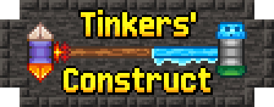

Can I reload scripts?
crafting
event.shaped(
Item.of('minecraft:stone', 3), // arg 1: output
[
'A B',
' C ', // arg 2: the shape (array of strings)
'B A'
],
{
A: 'minecraft:andesite',
B: 'minecraft:diorite', //arg 3: the mapping object
C: 'minecraft:granite'
}
)
Smelting & Cooking
// Cook 1 stone into 3 gravel in a Furnace: event.smelting('3x minecraft:gravel', 'minecraft:stone') // Blast 1 iron ingot into 10 nuggets in a Blast Furnace: event.blasting('10x minecraft:iron_nugget', 'minecraft:iron_ingot') // Smoke glass into tinted glass in the Smoker: event.smoking('minecraft:tinted_glass', 'minecraft:glass') // Burn sticks into torches on the Campfire: event.campfireCooking('minecraft:torch', 'minecraft:stick')
Stonecutting
//allow cutting 3 sticks from any plank on the stonecutter
event.stonecutting('3x minecraft:stick', '#minecraft:planks')
Removing Recipes
// A blank condition removes all recipes (obviously not recommended): event.remove({}) // Remove all recipes where output is stone pickaxe: event.remove({ output: 'minecraft:stone_pickaxe' }) // Remove all recipes where output has the Wool tag: event.remove({ output: '#minecraft:wool' }) // Remove all recipes where any input has the Redstone Dust tag: event.remove({ input: '#forge:dusts/redstone' }) // Remove all recipes from Farmer's Delight: event.remove({ mod: 'farmersdelight' }) // Remove all campfire cooking recipes: event.remove({ type: 'minecraft:campfire_cooking' }) // Remove all recipes that grant stone EXCEPT smelting recipes: event.remove({ not: { type: 'minecraft:smelting' }, output: 'stone' }) // Remove recipes that output cooked chicken AND are cooked on a campfire: event.remove({ output: 'minecraft:cooked_chicken', type: 'minecraft:campfire_cooking' }) // Remove any blasting OR smelting recipes that output minecraft:iron_ingot: event.remove([{ type: 'minecraft:smelting', output: 'minecraft:iron_ingot' }, { type: 'minecraft:blasting', output: 'minecraft:iron_ingot' }]) // Remove a recipe by ID. in this case, data/minecraft/recipes/glowstone.json: // Note: Recipe ID and output are different! event.remove({ id: 'minecraft:glowstone' })

In startup_script:
onEvent("botania.brews.registry", event => {
event.create("torrent")
/**
* The cost of mana per brew.
* For Tainted Blood Pendant, it is cost / duration / effectLevel * 2.5 per tick.
*/
.cost(5000)
/**
* The effect you want to specify for the Brew,
* can be specified for multiple times for applying
* multiple effects at once.
* The parameters come the same as /effect,
* except for duration is in ticks, not seconds.
*/
.effect("minecraft:water_breathing", 4800 * 20)
.effect("botania:allure", 300 * 20, 0, false, false)
/**
* Set to deny incense for this brew.
*/
.noIncense()
/**
* Set to deny pendant infusing for this brew.
*/
.noPendant()
})
- altar
event.recipes.bloodmagic.altar(output, input) event.recipes.bloodmagic.altar(output, input).upgradeLevel(int).altarSyphon(int).consumptionRate(int).drainRate(int)
- array
event.recipes.bloodmagic.array(output, baseInput, addedInput) event.recipes.bloodmagic.array(output, baseInput, addedInput).texture(string)
- soulforge
event.recipes.bloodmagic.soulforge(output, [input]) event.recipes.bloodmagic.soulforge(output, [input]).minimumDrain(double).drain(double)
- arc
event.recipes.bloodmagic.arc(output, input, tool) event.recipes.bloodmagic.arc(output, input, tool, [addedOutput]) event.recipes.bloodmagic.arc(output, input, tool, [addedOutput]).consumeIngredient(boolean).outputFluid(fluid)
- alchemytable
event.recipes.bloodmagic.alchemytable(output, [input]) event.recipes.bloodmagic.alchemytable(output, [input]).syphon(int).ticks(int).upgradeLevel(int)Example:
onEvent('recipes', event => {
const { altar, array, soulforge, arc, alchemytable } = event.recipes.bloodmagic
altar('minecraft:carrot', 'minecraft:apple')
array('minecraft:spruce_planks', 'minecraft:oak_planks', 'minecraft:birch_planks')
soulforge('minecraft:stone', ['minecraft:gold_ore', 'minecraft:diamond_ore', 'minecraft:iron_ore']).drain(1.0)
arc('minecraft:netherite_ingot', 'minecraft:iron_ingot', 'minecraft:iron_pickaxe', [Item.of('minecraft:cobblestone').chance(0.4)])
alchemytable('minecraft:gold_ingot', ['minecraft:iron_ingot', 'minecraft:iron_ingot', 'minecraft:iron_ingot', 'minecraft:iron_ingot']).upgradeLevel(2)
})

- crushing - enriching - smelting
event.recipes.mekanismCrushing(output, input)
- combining
event.recipes.mekanismCombining(output, input1, input2)- compressing - purifying - injecting
event.recipes.mekanismPurifying(output, inputItem, inputGas)- metallurgic_infusing
event.recipes.mekanismMetallurgicInfusing(output, inputItem, infusionInput, infusionAmount)- sawing
event.recipes.mekanismSawing(output, input, extraOutput)
event.recipes.tconstruct.casting_table(outputItem, inputFluidId)
event.recipes.tconstruct.casting_table(outputItem, inputFluidId, inputFluidAmount) // defaults to 144 mB
Supported recipe methods:
.cast(castIngredient) // defaults to #tconstruct:casts/multi_use/ingot .noCast() .multiUseCast(castType) .singleUseCast(castType) .consumeCast() .switchSlots() .coolingTime(ticks) // defaults to 60 event.recipes.tconstruct.casting_basin(output, inputFluidId) event.recipes.tconstruct.casting_basin(output, inputFluidId, inputFluidAmount) // defaults to 1296
- immersiveengineeringAlloy
event.recipes.immersiveengineeringAlloy(output, input1, input2)
- immersiveengineeringBlastFurnace
event.recipes.immersiveengineeringBlastFurnace(output, input) event.recipes.immersiveengineeringBlastFurnace(output, input, slag)
- immersiveengineeringBlastFurnaceFuel
event.recipes.immersiveengineeringBlastFurnaceFuel(input).time(300)
- immersiveengineeringCokeOven
event.recipes.immersiveengineeringCokeOven(output, input).creosote(250).time(900)
- immersiveengineeringCloche
event.recipes.immersiveengineeringCloche([outputs], input, soil)
event.recipes.immersiveengineeringCloche([outputs], input, soil, render) // Render format: {type: 'crop', block: 'minecraft:wheat'}
- immersiveengineeringFertilizer
event.recipes.immersiveengineeringFertilizer(input).growthModifier(1.5)
- immersiveengineeringMetalPress
event.recipes.immersiveengineeringMetalPress(output, input, mold)
- immersiveengineeringArcFurnace
event.recipes.immersiveengineeringArcFurnace([outputs], input) event.recipes.immersiveengineeringArcFurnace([outputs], input, [additives]) event.recipes.immersiveengineeringArcFurnace([outputs], input, [additives], slag)
- immersiveengineeringCrusher
event.recipes.immersiveengineeringCrusher(output, input)
event.recipes.immersiveengineeringCrusher(output, input, [secondaries]) // Secondary output format: {chance: 0.5, output: 'item:id'}
- immersiveengineeringSawmill
event.recipes.immersiveengineeringSawmill(output, input)
event.recipes.immersiveengineeringSawmill(output, input, [secondaries]) // Secondary output format: {stripping: true, output: 'item:id'}
event.recipes.immersiveengineeringSawmill(output, input, [secondaries], stripped)
- createCutting
- createMilling
- createBasin
- createMixing (supports .heated() and .superheated())
- createCompacting (supports .heated() and .superheated())
- createPressing
- createSandpaperPolishing
- createSplashing (Bulk Washing)
- createDeploying
- createFilling
- createEmptying
Note: Bulk Smoking = vanilla smoking and Bulk Blasting = vanilla blasting recipe types.
event.recipes.createCrushing(output[], input[])
//Output doesn't have to be array. It can be either items or fluids
//Input doesn't have to be array. It can be either ingredients or Fluid.of('minecraft:water', 1000) or {fluidTag: 'some:fluid_tag', amount: 1000}
- createMechanicalCrafting
event.recipes.createMechanicalCrafting(output, pattern[], {patternKey: input})
//This recipe type is the same as regular crafting table shaped recipe
- createSequencedAssembly
event.recipes.createSequencedAssembly(output[], input, sequence[])
// output[] are your output items
// input is your input item
// sequence[] is an array of sequences. These sequences are "regular" recipes that are supported.
Examples:
event.recipes.createCrushing([
'2x minecraft:cobblestone',
'minecraft:redstone',
Item.of('minecraft:redstone').withChance(0.5)
], 'minecraft:redstone_ore')
event.recipes.createMixing('create:chromatic_compound', [
'#forge:dusts/glowstone',
'#forge:dusts/glowstone',
'#forge:dusts/glowstone',
'create:powdered_obsidian',
'create:powdered_obsidian',
'create:powdered_obsidian',
'create:polished_rose_quartz'
]).superheated()
event.recipes.createFilling('create:blaze_cake', [
'create:blaze_cake_base',
Fluid.of('minecraft:lava', 250)
])
event.recipes.createEmptying([
'minecraft:glass_bottle',
Fluid.of('create:honey', 250)
], 'minecraft:honey_bottle')
event.recipes.createMechanicalCrafting('minecraft:piston', [
'CCCCC',
'CPIPC',
'CPRPC'
], {
C: '#forge:cobblestone',
P: '#minecraft:planks',
R: '#forge:dusts/redstone',
I: '#forge:ingots/iron'
})
event.recipes.createSequencedAssembly([ // start the recipe
Item.of('6x create:large_cogwheel').withChance(32.0), // have this item be an output with a certain chance
Item.of('create:brass_ingot').withChance(2.0), // have this item be an output with a certain chance
'minecraft:andesite', // have this item be a guaranteed output
'create:cogwheel', // have this item be a guaranteed output
'minecraft:stick', // have this item be a guaranteed output
'minecraft:iron_nugget' // have this item be a guaranteed output
], 'create:brass_ingot', [ // 'create:brass_ingot' is the input.
// the transitional item set by "transitionalItem('create:incomplete_large_cogwheel')" is the item that will be used during the recipe as the item that the input is using to transition to the output.
event.recipes.createDeploying('create:incomplete_large_cogwheel', ['create:incomplete_large_cogwheel', '#minecraft:planks']), // like a normal recipe function, is used as a sequence step in this array. Input and output have the transitional item
event.recipes.createDeploying('create:incomplete_large_cogwheel', ['create:incomplete_large_cogwheel', '#minecraft:wooden_buttons']), // like a normal recipe function, is used as a sequence step in this array. Input and output have the transitional item
event.recipes.createCutting('create:incomplete_large_cogwheel', 'create:incomplete_large_cogwheel').processingTime(50) // like a normal recipe function, is used as a sequence step in this array. Input and output have the transitional item
]).transitionalItem('create:incomplete_large_cogwheel').loops(6) // set the transitional item and the loops (amount of repetitions)
If you want to use your own transitional item in sequenced_assembly recipes, you must register it in startup event:
onEvent('item.registry', event => {
// Texture for this item goes in kubejs/assets/kubejs/textures/item/my_part.png
event.create('my_part', 'create:sequenced_assembly').displayName('My Part')
})